Length of Baseball Games
1 Introduction
We are all aware that baseball games tend to be long, especially those during the playoffs. This article contains posts written on the general subject of game length from the “Exploring Baseball Using R” blog.
Section 2 uses Retrosheet play-by-play data to explore how the game length depends on the number of pitches. Section 3 looks at all times between pitches for games played during the 2013 season.
Section 4 focuses on so-called “pace stats”, the time between between pitches for individual pitchers. We find a large variation between pitchers in a particular group.
Section 5 illustrates the use of Retrosheet game log data to explore the variation in game duration. One interesting takeaway is the game duration tends to increase by 27 minutes for each 10 additional non-outs in a game.
Section 6 explores the length of the 2017 World Series games and Section 7 explores three possible explanations for the increasing lengths of games.
2 Length of Baseball Games
As we know, baseball is no longer America’s game – I believe baseball has been surpassed in popularity by American football. One problem is that MLB games are long – games in the 2012 season were significantly longer than the games twenty years ago. In this post, we’re going to try to learn more about the variables that control the length of a baseball game. In doing so, we’ll illustrate merging Retrosheet play-by-play data with Retrosheet game logs.
A baseball game is essentially a sequence of pitches, so I would think the time of a game would be strongly related to the number of pitches.
The number of pitches in each game during the 2012 season can be obtained using the Retrosheet play-by-play files. I assume that a single text file all2012.csv has been saved in a data folder and a fields.csv file in this same folder contains the names of all of the variables. (We explain this downloading process in Appendix A of our book.) We read these files into R and save the play-by-plays in a data frame called plays.
season <- 2012
file.name <- paste("data/all", season, ".csv", sep="")
plays <- read.csv(file.name, header=FALSE)
fields <- read.csv("data/fields.csv")
names(plays) <- fields[, "Header"]The variable PITCH_SEQ_TX gives the pitch-by-pitch sequence and other events like pickoff attempts and steals for each play. We remove all non-pitches from this variable using the function gsub(), creating a new variable pseq. The string function nchar() computes the length of each string (the number of pitches in each plate appearance) and this is stored in the variable n.pitches.
plays$pseq <- gsub("[.>123N+*]", "", plays$PITCH_SEQ_TX)
plays$n.pitches <- nchar(plays$pseq)The Retrosheet game logs for the 2012 season are stored in the file gl2012.txt and the corresponding header file is stored in game_log_header.csv. We read both data files into R, creating the data frame games.
file.name <- paste("data/gl", season, ".txt", sep="")
games <- read.csv(file.name, header=FALSE)
headers <- read.csv("data/game_log_header.csv")
names(games) <- names(headers)Going back to the play-by-play data frame, we create a new variable GAME_ID (this facilitates the merging with the game log data frame). Then we use the function ddply() (in the plyr package) to count the number of pitches in each game, creating the new variable Pitches.
games$GAME_ID <- with(games, paste(HomeTeam, Date, "0", sep=""))
library(plyr)
game.pitches <- ddply(plays, .(GAME_ID), summarize,
Pitches = sum(n.pitches))Now we use the merge() function to merge the game.pitches and games data frames, using the matching variable GAME_ID. The merged data frame is called DATA. We use the head() function to display a few rows of this data frame.
DATA <- merge(game.pitches,
games[, c("GAME_ID", "Duration")],
by="GAME_ID")
head(DATA)
GAME_ID Pitches Duration
1 ANA201204060 242 142
2 ANA201204070 271 166
3 ANA201204080 331 195
4 ANA201204160 282 168
5 ANA201204170 275 166
6 ANA201204180 289 164Now is the fun stuff. To see the relationship between the number of game pitches and time (in minutes), we construct a smoothed scatterplot (this is nice for displaying a large number of point) and overlay a best fitting line.
with(DATA, smoothScatter(Pitches, Duration))
fit <- lm(Duration ~ Pitches, data=DATA)
abline(fit, lwd=3, col="red")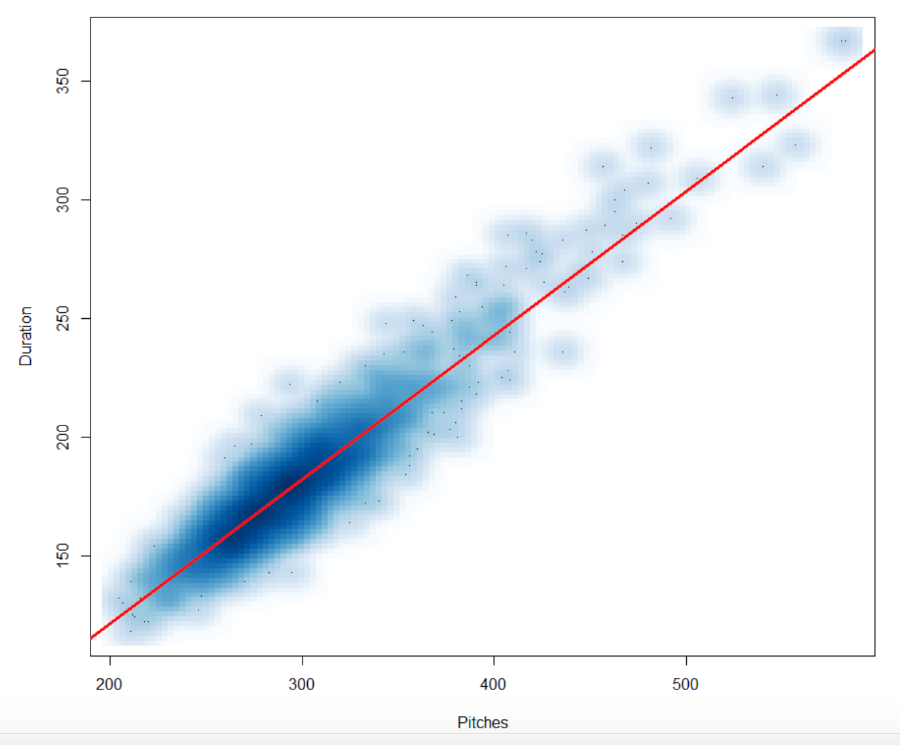
By displaying the variable fit, we see the best line is
DURATION = 0.2725 + 0.6069 PITCHESSo each pitch in a baseball game adds (on average) .6 of a minute (or 36 seconds) to the length of a game. But we see significant spread in the times for a given number of pitches, so obviously there are other important factors that affect the length of a game. In a future post, we’ll discuss these other factors.
3 Dissection of the Time of a Baseball Game
In my last post, we found that the time of a baseball game is strongly related to the number of pitches, and each pitch adds, on average, 36 seconds to the length of a baseball game. Here we use PitchFX data to get a better understanding about the times between pitches in a single game. There is a nice package pitchRx , authored by Carson Sievert, that allows one to easily download PitchFX data and explore data from all pitches.
Here we load the package and use the scrapeFX function to download the pitches for all games played on September 5, 2013. The plyr::join() function puts all of the pitch data in a single data frame pitches .
library(pitchRx)
dat <- scrapeFX(start = "2013-09-05", end = "2013-09-05")
pitches <- plyr::join(dat$pitch, dat$atbat,
by = c("num", "url"), type = "inner")The pitchFX system records the time of each pitch which is stored in the variable sv_id . Using the substr() function, we create a new variable time equal to the number of seconds past midnight.
pitches$hours <- as.numeric(substr(pitches$sv_id, 8, 9))
pitches$minutes <- as.numeric(substr(pitches$sv_id, 10, 11))
pitches$seconds <- as.numeric(substr(pitches$sv_id, 12, 13))
pitches$time <- with(pitches, 3600 * hours +
60 * minutes + seconds)Let’s look at the pitch times of the game played between Arizona and San Francisco on September 5, 2013. (See the box score for this game on Baseball-Reference.) By extracting a portion of the url variable, we create a new variable game.id and use the subset() function to extract the pitches for this particular game.
pitches$game.id <- substr(pitches$url, 66, 95)
pitches1 <- subset(pitches,
game.id=="gid_2013_09_05_arimlb_sfnmlb_1")
pitches1 <- pitches1[order(pitches1$time), ]Since we are interested in the times between pitches, a new data frame time.data is created containing three variables: Time, the time between consecutive pitches, Index, the number of the pitch, and the Inning when the pitch occurred.
time.data <- data.frame(Time=diff(pitches1$time),
Index=1:(length(pitches1$time) - 1),
Inning=pitches1$inning[-1]) The ggplot2 package is used to graph the time between pitch against the pitch number. (We give many illustrations of the ggplot2 package in our book.) In the graph, the plotting symbol is the inning number, and we add horizontal lines at 1, 2, and 3 minutes to make it easier to read the vertical scale.
library(ggplot2)
ggplot(time.data, aes(Index, Time, label=Inning)) +
geom_text(size=6, color="blue") +
geom_hline(yintercept=60) +
geom_hline(yintercept=120) +
geom_hline(yintercept=180) +
geom_text(data = NULL, x = 25, y = 65,
label = "1 MINUTE", size=8) +
geom_text(data = NULL, x = 25, y = 125,
label = "2 MINUTES", size=8) +
geom_text(data = NULL, x = 25, y = 185,
label = "3 MINUTES", size=8) +
labs(title = "Times Between Pitches in a Baseball Game") +
theme(plot.title = element_text(size = rel(2))) +
theme(axis.title = element_text(size = rel(2))) +
theme(axis.text = element_text(size = rel(2))) +
ylab("Time (Seconds)")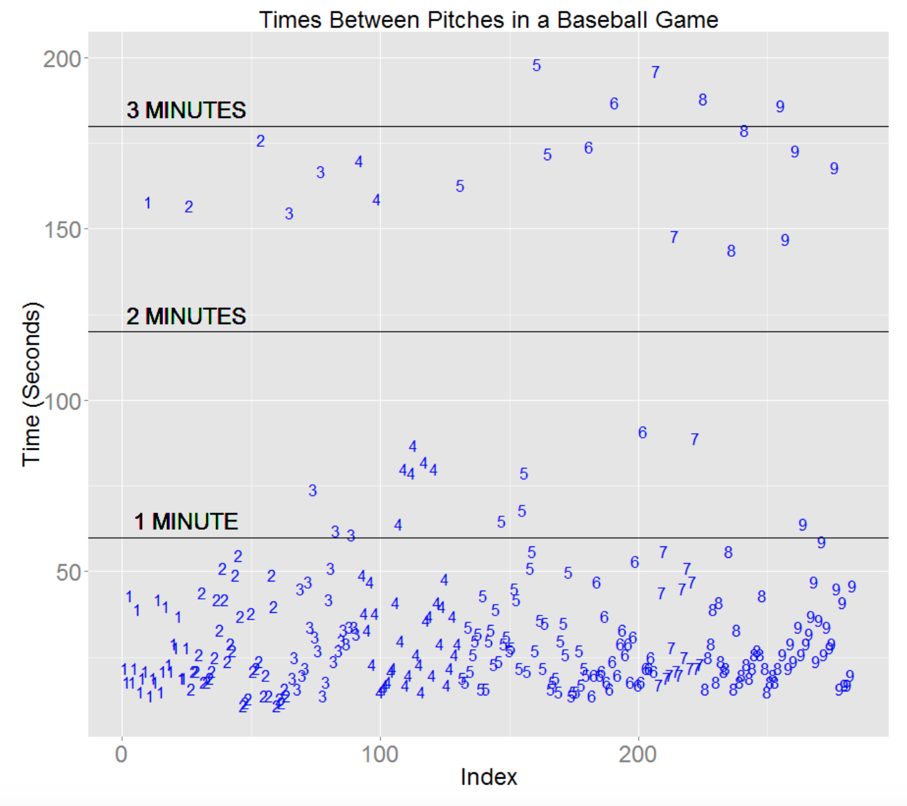
What do we learn from this graph?
- In a typical inning, the time between pitches is between 15 to 30 seconds.
- It is pretty common for the time between pitches to fall between 30 and 60 seconds. This could be due to balls in play, a pickoff move, time outs, and other factors. It would be interesting to relate the times with the actual plays as recorded in Baseball-Reference.
- There are a number of significant breaks, between 2 1/2 and 3 1/2 minutes. Many of these are simply the breaks between half-innings – for example, the one 1 symbol, the two 2’s, and the two 3’s are just the inning breaks. Some of the long breaks that one sees towards the end of the game likely correspond to pitching changes.
- It is pretty clear that the game slows down towards the end, judging by the large number of long breaks in the 8th and 9th innings.
This is an illustration of the time breakdown for a typical MLB in 2013 which lasted 3 hours and 11 minutes. By looking at this time data over many games, I think one would get a better understanding about the time patterns of long games and that might help MLB devise ways to make the games shorter.
4 Pace Stats in Baseball and Tennis
4.1 Introduction
We have heard a lot recently about the growing length of a baseball game and there has been some discussion in MLB about possibly moving towards a time clock where a pitcher has to pitch within a specific number of seconds. Pace is also an issue in tennis – in women’s tennis, a server is supposed to serve within 20 seconds of the end of the previous point. In this post, I’ll summarize some data I collected about server pace from the recent Australian Open and then explore pitcher pace data using the Pitch F/X data. (A couple of years ago I dissected the total length of a baseball game using similar data.)
4.2 Tennis – Serena Williams and Maria Sharapova
I watch a lot of tennis and it seems that Maria Sharapova has a very deliberate style of serving. I would think that this style might translate into a longer time to serve. To check, I used a timer to measure the time-to-serve for all points played during the first set of the recent match between Serena and Maria at the Australian Open. In the graph below, I plot the pace data against the game number for both players and add a horizontal line corresponding to the 20 second rule. From this graph, we see that although there is some variation in pace, Serena tends to average 20 seconds after the end of the previous point. In contrast, Maria seems to average more like 25 seconds. It is notable that Maria was especially slow in Game 10 which was tense and determined the outcome of the first set.
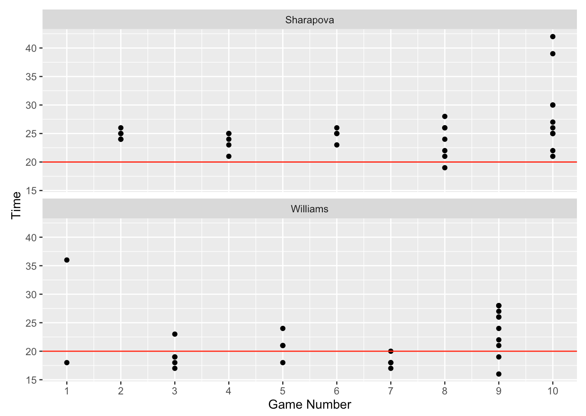
4.3 Baseball – Pitcher Pace Stats from a Week in the 2015 Season
It is interesting that MLB experimented with a 20 second rule in baseball in the Arizona Fall League in 2014. That raises the question – what are typical times between pitches in 2015 baseball?
In the pitchFX data, there is a time stamp that records the time of every pitch and one can use this data to record the times between pitches. One has to be careful in working with this time data. First, we don’t care about the time between pitches of different plate appearances and there are other reasons for a “slow” time to pitch – perhaps there is a pitcher-catcher dialog or something else happens that delays the time until the next pitch.
Anyway, here is what I did (all of the R code can be found at my gist site if you want to see the details):
- I used the scrape function from the PitchRX package to download all of the PitchFX data for the week September 5 through the 11th.
- From the time stamp variable, I computed a new variable that was the number of seconds past midnight.
- For a specific pitcher, I wrote a function that computed the difference in the time between pitches in the same plate appearances. If there was only one pitch in the PA, then I would not be able to measure the pace variable.
Here are histograms of the time between pitches for eight pitchers. Just like the tennis pace data, these times tend to be right skewed with occasional large values. So I think a median instead of a mean is a good measure of “average” – I have graphed the pitcher medians using green lines and the 20 second value with red lines. We see Justin Verlander and Joe Kelly are relatively slow in delivering pitches and Wade Miley seems to be relatively fast.
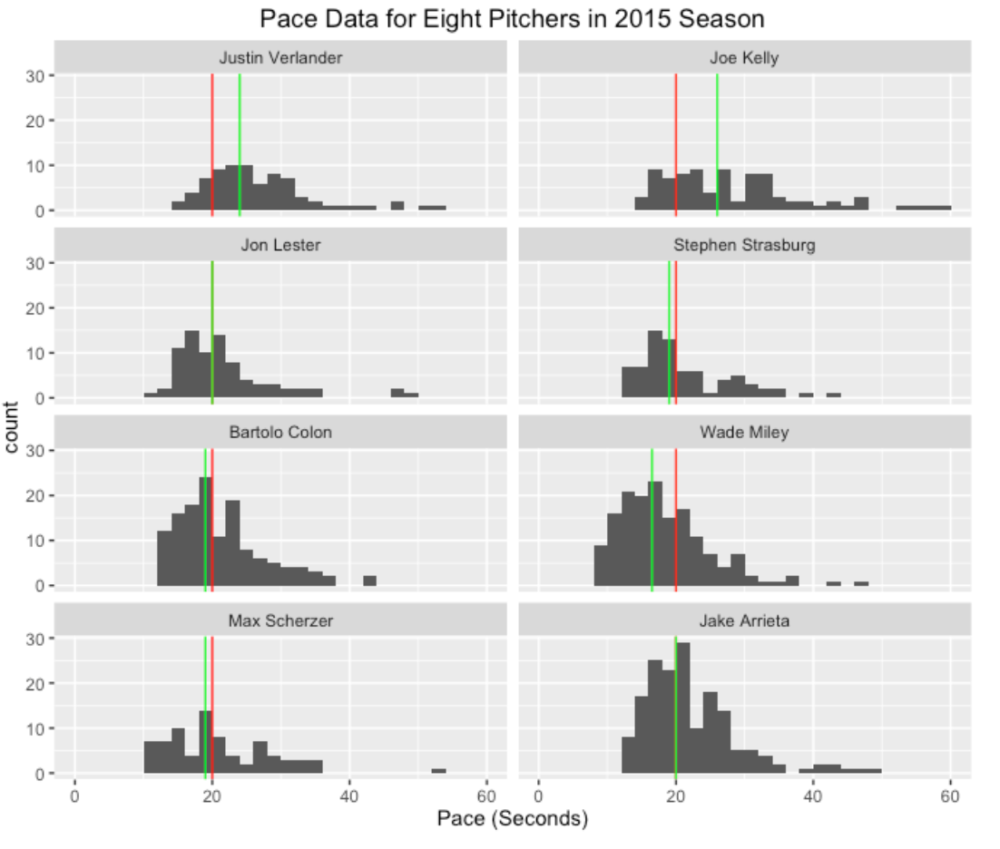
I collected all of the pitchers with at least 100 time measurements during this week in September. The following graph shows the median pace of all pitchers, arranged from fastest to slowest. We see a majority of these pitchers have an average pace exceeding 20 seconds. Also I think it is interesting to see the large variation in average pace in the pitchers in this group.
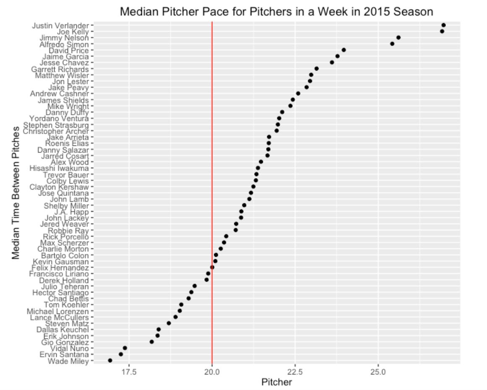
4.4 Wrapup
I think MLB needs to explore the time of game issue and think of possible rules that might help to decrease the game times and make the game more enjoyable for its fans. A first step in this exploration has to be a careful examination of how the current game progresses in time and a good exploration of the data will be helpful towards that goal.
5 Game Duration Study with Retrosheet Gamelog Data
5.1 Introduction
In the last post, I did a brief stolen base study using 2016 Retrosheet play-by-play data. This week I downloaded the Retrosheet game logs for the 2016 season. Here I will use this game log data to see what variables are helpful for explaining the variation in game duration.
Can we make a reasonable prediction of the time of the game based on data from a box score?
5.2 Useful Predictors?
Looking at the variables in a box score, what variables are predictive of game length? I first looked at a few potential predictors, primarily for curiosity.
Do baseball games get longer as the season progresses? I computed a variable day defined to be the number of days past April 1. Here is a scatterplot of game duration against day with a smoother added.
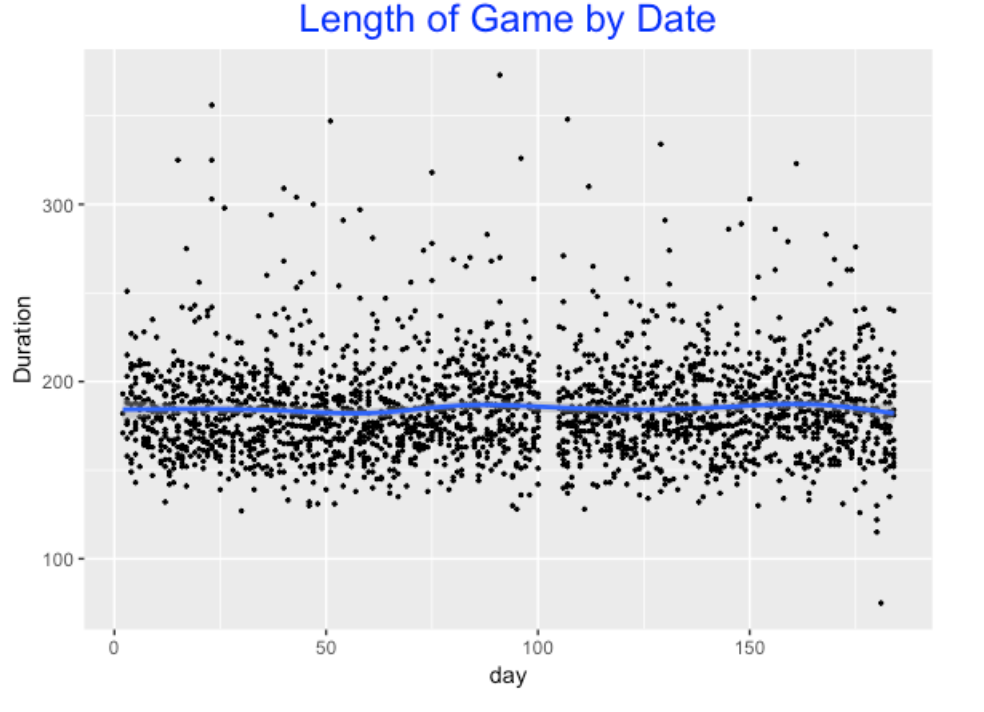
Not much interesting here. We see the All-Star break (the gap from days 100 to 110), but the time of game, on average, is approximately 3 hours (180 minutes) from the beginning to the end of the season. I also noticed a bunch of outliers at the high end – maybe these are extra-inning games?
Does the length of game vary by the day of the week? Here are some parallel boxplots where I’ve ordered the boxplots by the medians.
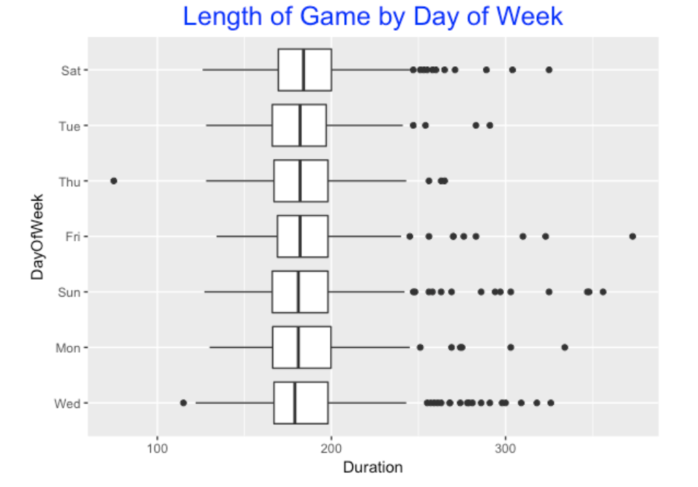
This is a little interesting – Saturday games tend to be longest, on average, and Wednesday games tend to be shortest. The size of the effects are small, so it is not that exciting a find.
5.3 Let’s Get Serious
Okay, most games have around 54 outs, so the number of outs likely is not a useful predictor of game length. But the number of non-outs (hits plus walks plushbp) would seem to be a useful predictor. Below I confirm this by plotting the non-outs and the game duration. (I thought that many of the high outliers were due to extra-inning games. I was right – when I filtered the data to only 9-inning games, theses outliers disappeared in this graph.)
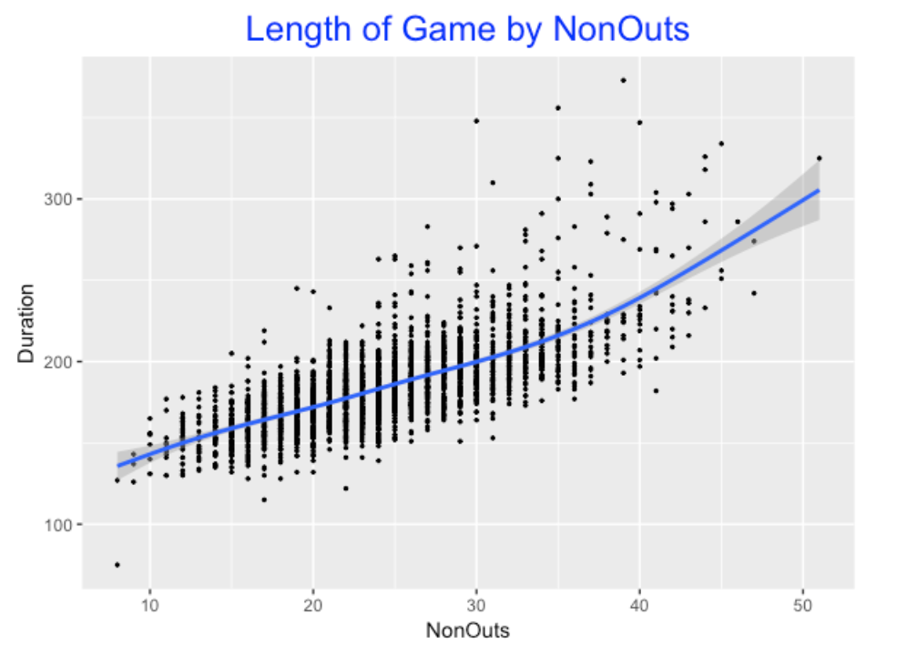
5.4 A Simple Regression Model
Clearly NonOuts is a useful predictor of game length. After some exploration, I found that another boxscore variable was helpful in this prediction – the fraction of runners left on base (LOB) divided by the NonOuts, that is LOB / NonOuts. We’ll call this variable LOB_Frac – this is approximately the fraction of runners who remain on base (don’t score). (I say approximately since NonOuts include home runs that won’t have runners.)
When I fit a regression model using NonOuts and LOB_Frac, I get the fit
Game_Duration = 95.77 + 2.71 * NonOuts + 35.32 * LOB_FracTo understand this fit, I let the LOB_Frac be equal to 0.2, 0.5, 0.8 and plot the predicted Game_Duration as a function of NonOuts.
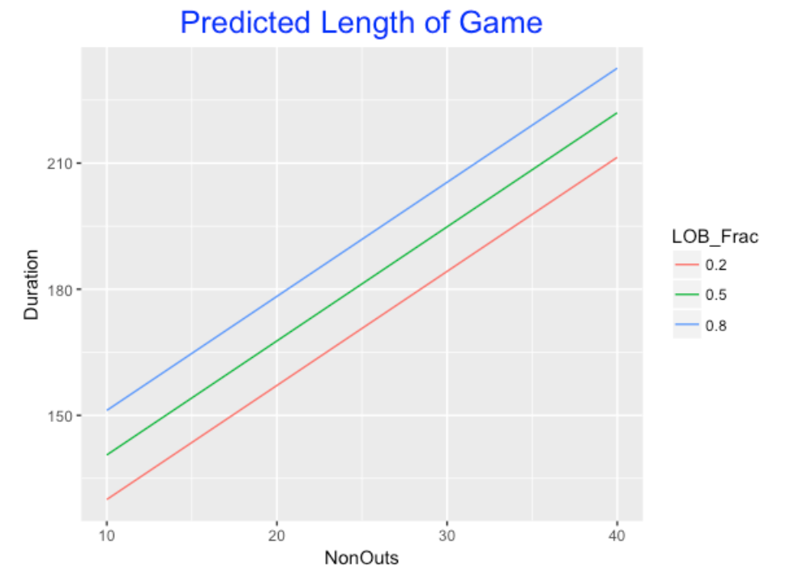
If the LOB_Frac value is held constant, then for every 10 additional NonOuts, the Game Duration will increase by 27 minutes. On the other hand, if we fix NonOuts, then as LOB_Frac goes from 0.2 to 0.8, the Game Duration will increase by 20 minutes. The bottom line is that the number of NonOuts and the fraction of NonOuts left on base are both relevant for predicting the time of the game.
5.5 What’s Left?
Of course, the fit is only part of the story – I should gain some understanding of the size of the residuals, that is Residual = Duration - Fit. I plot the residuals against the NonOuts below.
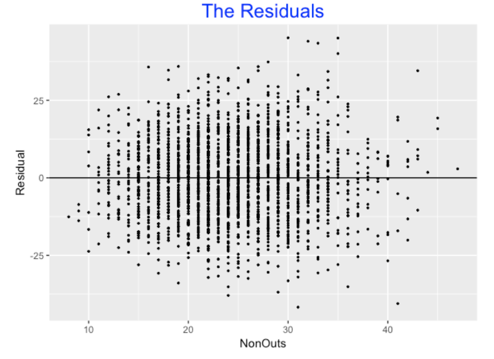
Looking at summary(fit), I see the residual standard error is about 13 minutes. This means that about 2/3 of the residuals will be between -13 and +13 minutes, 95% of the residuals between -26 and 26 minutes, etc. There are variables such as the number of pitches, the number of pitchers, the number of challenges, etc. which would explain some of remaining variation in the game duration.
5.6 Looking Further
There is much more that could be discovered about Game Duration, but the purpose of this post was to see what I could learn from the Retrosheet game logs. Several years ago, I wrote a post where I collected PitchFX data to explore the time between pitches. Since the time of game is an important issue (maybe the popularity of baseball is waning due to the longer games?), I would think that MLB would want to do an extensive study to learn what variables are relevant for understanding game length.
5.7 R Script
As usual, I show all of my R work in the script game_duration_study.R on my Github Gist site. This script gives information on getting the Retrosheet game log data and obtaining a file with the variable name header.
6 Length of World Series Games
6.1 Introduction
The 2017 World Series was certainly exciting and it was notable being the first championship for the Houston Astros. But the games tended to be long – especially Game 5 that lasted five hours and 15 minutes. That raises several questions:
- What factors impact the length of a baseball game?
- What are typical times between pitches?
- How do all those extra events such as conferences at the mound, batter asking for time, affect the length of the game?
Here is a recent article describing this game length problem. One interesting statement in this article is that the author believes that “inaction pitches” (pitches not resulting in ball, called or swinging strike that does not end the PA) are the principle villain.
Anyway, here I will explore the 2017 WS game lengths. (I did a previous study on a baseball game times a few years back.) . I won’t completely answer these questions, but hopefully provide some insight. I think Major League Baseball should seriously look at ways of shortening games, since these long games probably have a negative impact on fan interest. (Two-hour MLB games used to be pretty common.)
6.2 The Data
Using Carson Sievert’s PitchRx package, I downloaded the pitch-by-pitch data for the seven WS games. The pitches component of the download contains the variable sv_id which is a time stamp when each pitch is thrown. We can extract the time in seconds from this variable and by taking differences, we have the time between pitches.
6.3 Number of Pitches and Game Length
From previous work, I found that the number of pitches was a good predictor of a game’s length. Here I have plotted the number of pitches (horizontal) against the length of the game (minutes). We note a large variation in game lengths – Game 1 was only 148 minutes contrasted with the 315-minute Game 5.
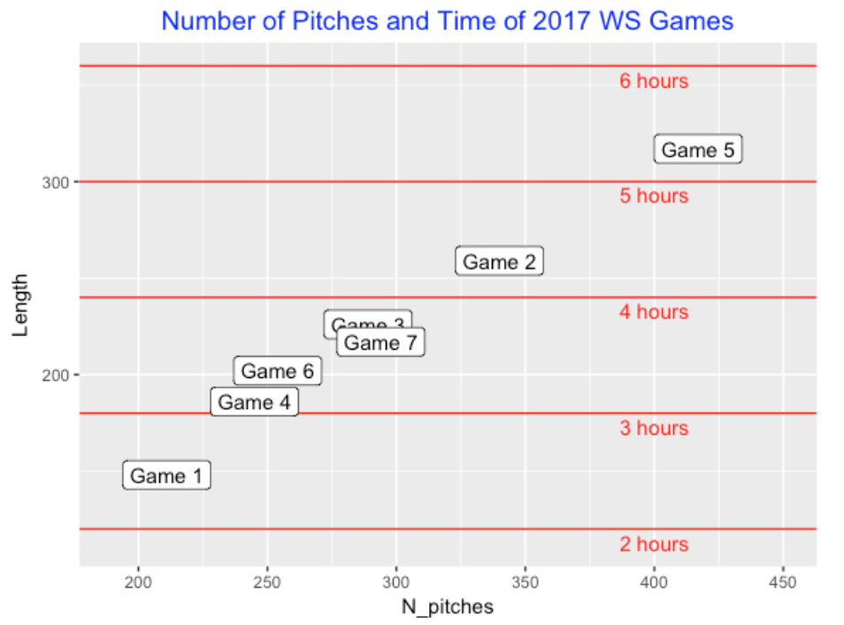
6.4 Time between Pitches
When one looks at time between pitches, there are three different time periods to consider: the time between pitches for a single batter, the time between the last pitch of a batter and the first pitch for the next batter (same inning), and the time between half-innings. Below I am graphing the time between pitches in the same inning as a function of the pitch number – this is Game 1 so Dodgers pitchers correspond to the values in the top of the inning and the Astro pitchers in the bottom of the inning. Note that many of the times are short (between 10 and 20 seconds), but there are a number of values between 30 and 80 seconds. For this particular game, the Dodgers were quicker than the Astros in pitching.
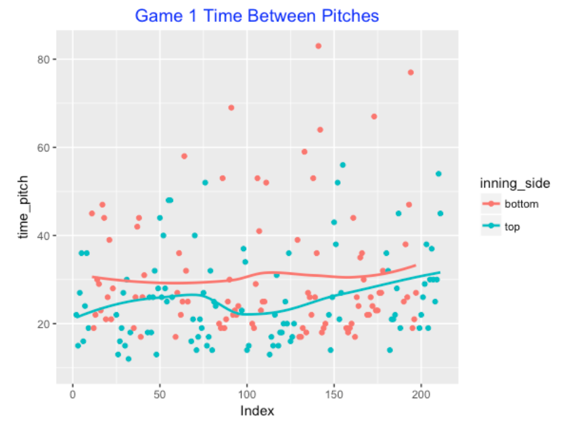
6.5 Comparing Two Games
This is a similar graph, but I’m comparing the time between pitch for Games 1 and 3. (Actually Dodgers are blue points in the top graph and red in the bottom graph.) I see a general tendency for the time between pitches to increase towards the end of each game.
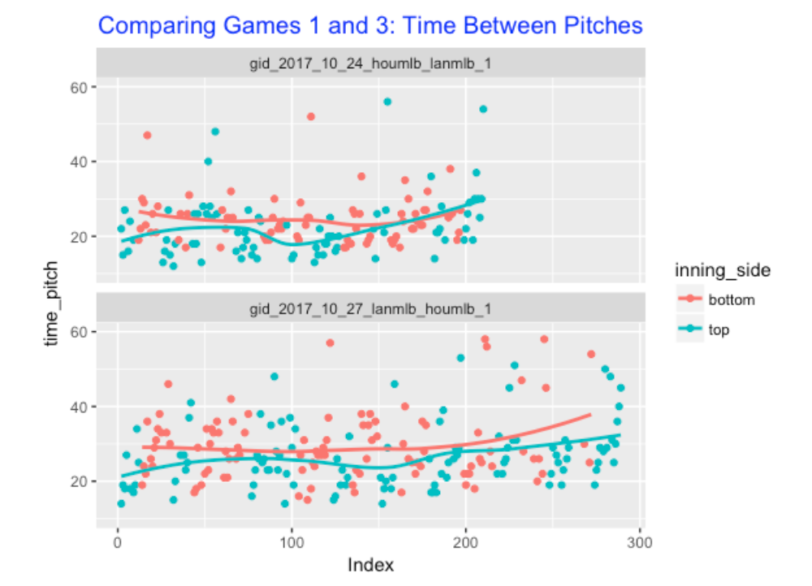
6.6 Times between Pitches – Within and Between Batters
Next I focus on comparing the time between pitchers for the same batter and the time between pitches on different batters. There is quite a difference – pitches are only (on the average) 20-25 seconds apart for the same batter, but pitches between batters can average 40-50 seconds part. There are differences between games – there seem to be larger delays between batters for the 10/27 game.
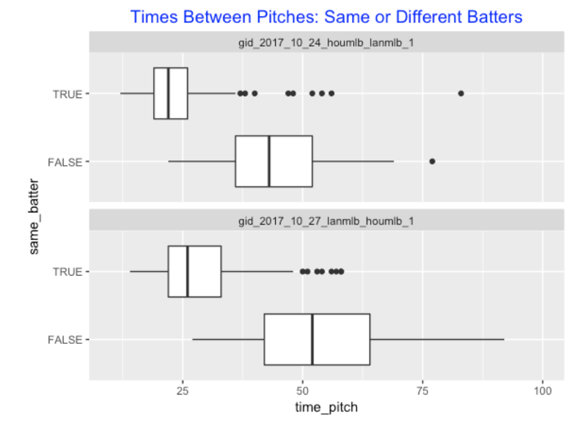
6.7 Differences between Pitchers
Of course, it is interesting to compare the time between pitches for different pitchers. Here is a parallel boxplot display where I have ordered the pitchers by median of time between pitches for the same batter. It is interesting that three of the Dodger starters (Kershaw, Hill, and Wood) are the fastest to deliver, while some of the closers such as Jansen and Giles are among the slowest.
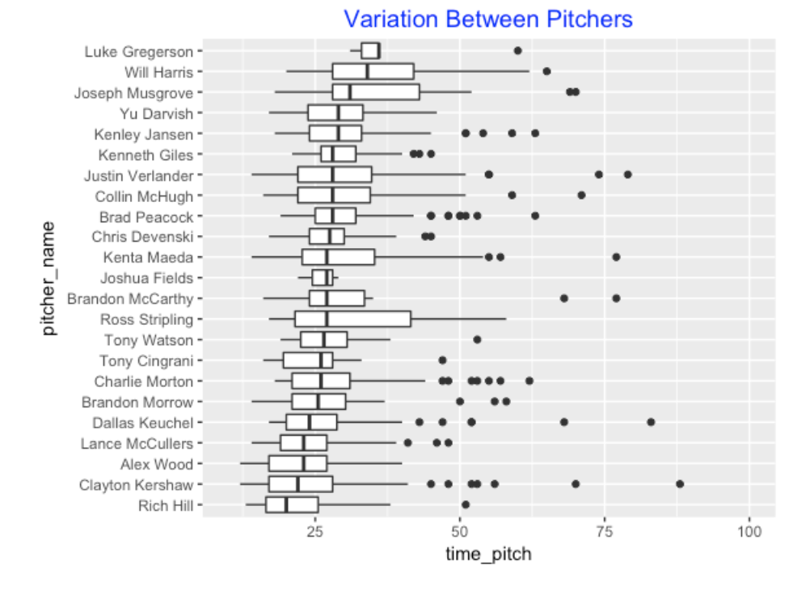
6.8 Advice to Major League Baseball
I didn’t work on this study for that long, but I think MLB could commission a larger study to better understand the factors that influence the lengths of current baseball games. In other words, what is driving the increased games of games? I don’t think MLB wants to change the basic rules (nine innings, three outs an inning), but there are other types of events (such as catcher/pitcher meetings, timeouts during a PA, challenges) that could be modified through rules. For example, could the number of catcher-pitcher conferences be reduced? All of the relevant variables are not available in the pitchFX file, but I suppose additional variables could be added to the data by watching the video of the game. I think MLB has to seriously consider changes such as game length that would make the game more enjoyable to watch.
7 Why Are Baseball Games So Long?
7.1 Introduction
Baseball has been declining in popularity (at least as measured by game attendance figures) and one possible reason for this decline is the increasing length of games. Below I have graphed the mean length of a 9-inning game for the past 20 seasons. Interestingly, the mean length of a baseball game dropped from 2000 to 2005, but it has shown a steady increase from 2005 to the recent 2019 season. The mean length of a 9-inning game in 2005 was 166 minutes (about 2 3/4 hours) and the mean length in 2019 has risen to 185 minutes (over 3 hours). Games in the post season seem to be especially long and the patient baseball fan sometimes has to wait after midnight to watch the final pitch and see the outcome of a playoff game.
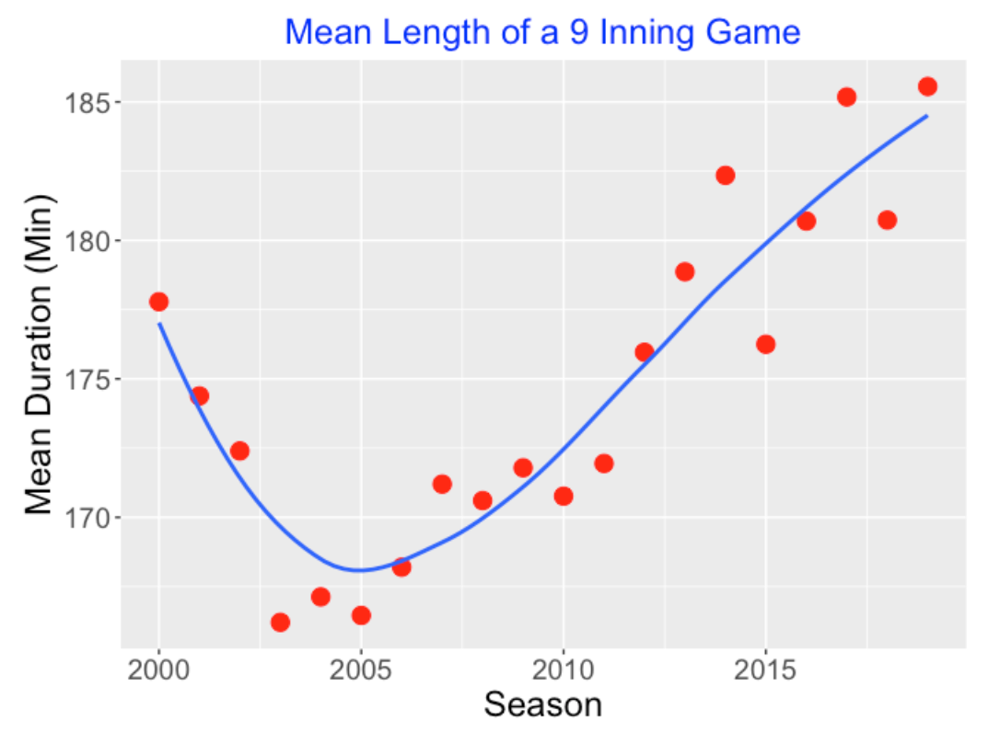
Although it is obvious that baseball games are getting longer, the reasons for the increase in game length are not as clear. In this blog we’ll propose several explanations for the increasing game length and use several graphs to provide some insight into these possible explanations. From this exploration, we’ll see that there is one issue that may be the main contributor to this problem and we’ll discuss what steps Major League Baseball can take to address this issue.
7.2 Three Possible Explanations
Possible Explanation 1. Although a baseball game is divided into innings, a game essentially is a sequence of plate appearances. When there are many runs scored in a game, there will tend to be more runners, more hits, and more non-out plate appearances and longer games. That motivates the first possible explanation. Perhaps the increase in baseball length over seasons is due to an increasing amount of hits, scoring and plate appearances in recent seasons.
Possible Explanation 2. Each plate appearance is a sequence of pitches which ends with a strikeout, a walk, or a ball put into play. (I’m ignoring some other outcomes which happen rarely.) It takes time to throw each pitch. So perhaps batters are having longer plate appearances, that is seeing more pitches, and that is the reason for the longer games.
Possible Explanation 3. Maybe batters aren’t facing more pitches in a plate appearances from season to season, but the pitchers are taking longer to throw these pitches. Although MLB has talked about creating a 20-second rule, pitchers currently are not forced to pitch within a particular time frame. Maybe slower pitching is the cause of the increasing game lengths?
Let’s look at each of the possible explanations for the increasing game lengths in the past 20 seasons.
7.3 More Plate Appearances?
Let’s first look at the number of PAs (plate appearances) in a game. I’ve graphed the mean number of PAs in a game against season. Actually the average number of PAs has dropped from 2000 to 2015 and is showing a slight increase in recent seasons. No, there aren’t (on average) more PAs in a game. The change in PAs does not appear to be causing the increase in game length.
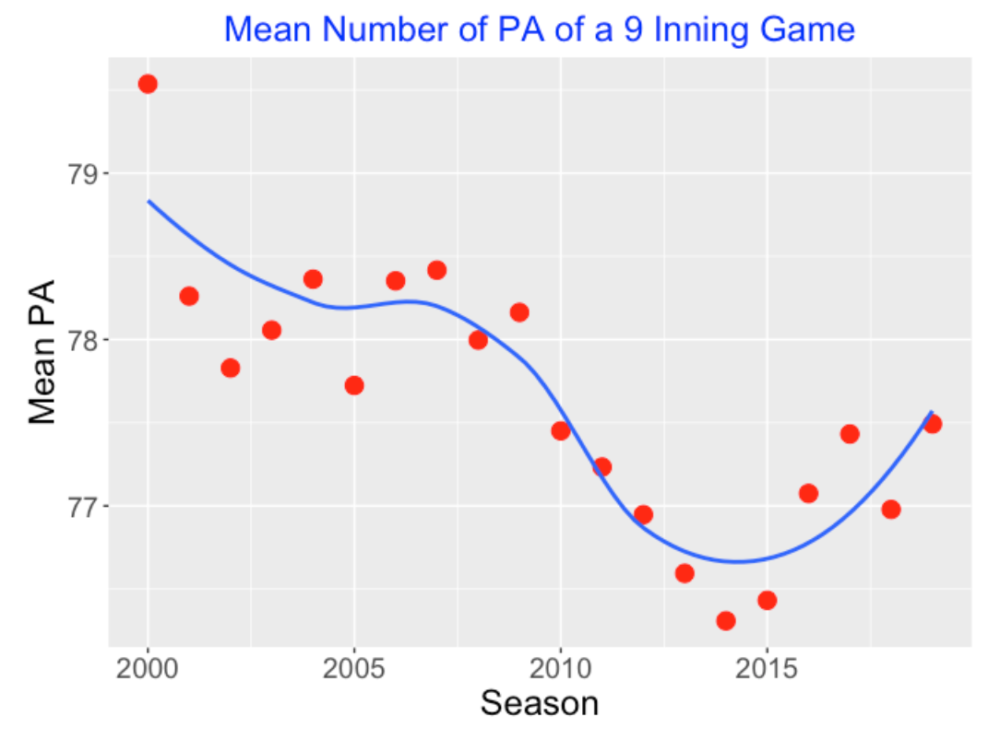
7.4 Longer Plate Appearances?
Next let’s look at the length of a PA and see how it has changed over seasons. Graphing the mean number of pitches per PA, we see a steady increase in the last 20 seasons – batters were taking 3.7 pitches per PA in 2000 and now they are taking 3.9 pitches per PA. Generally it seems that batters are becoming more patient and taking more pitches. (The free swinger is becoming rare.)
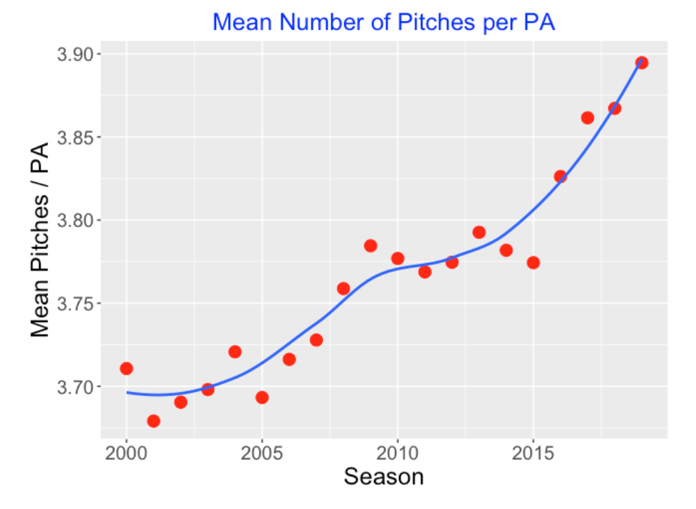
Since we’ve shown that the number of PAs has shown some decrease, one might wonder how the number of pitches per game has changed. So I have graphed the average number of pitches in a nine-inning game below. Although this mean number of pitches was pretty level between the 2000 and 2015 seasons, it has grown steadily in the last four seasons.
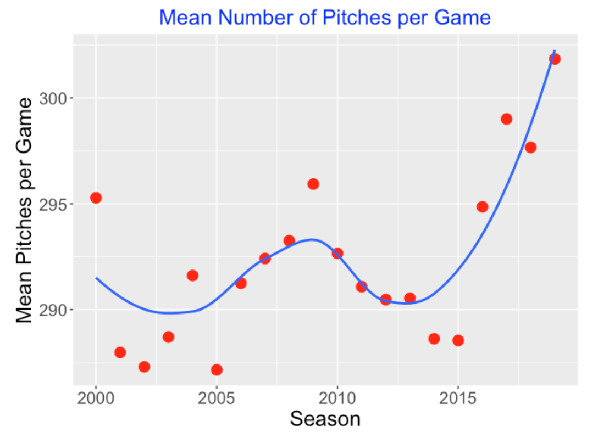
7.5 Longer Time to Pitch?
Not only are we seeing more pitches per game, the time to throw these pitches is changing. Here’s how I measured the time to pitch. For a particular season, I fit a simple linear regression to the (Number of Pitches, Duration) data and the slope of this line is the estimate of the time to take an additional pitch. I plot these season regression slopes in the plot below. We see a increasing trend of this “mean time per pitch”, although this time measurement has appeared to stabilize in recent seasons.
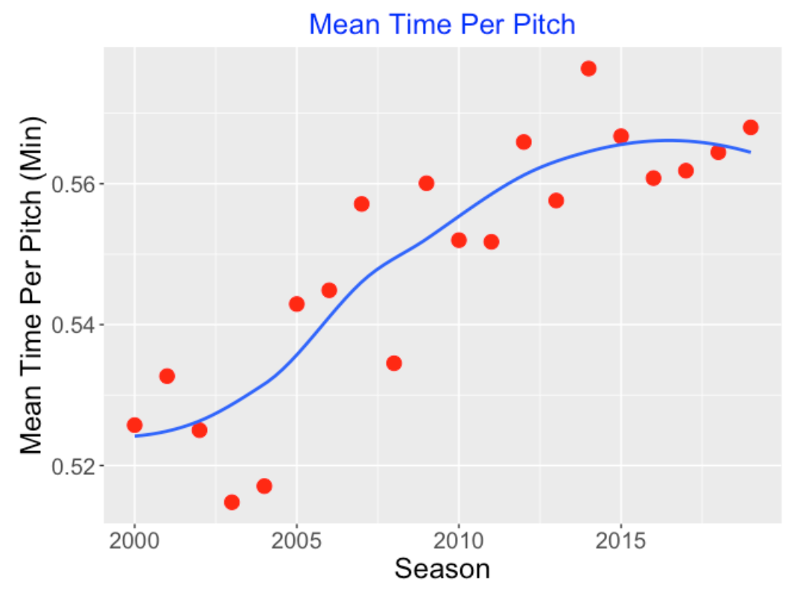
7.6 What Have We Learned?
We suggested three reasons for the increasing game lengths – more plate appearances, longer plate appearances, and longer times to pitch. Our analysis is somewhat superficial since we are focusing only on changes in the mean values over seasons, but we can draw some conclusions. We don’t see an increase in the mean number of PAs. But plate appearances are clearly getting longer (more pitches per PA) and I wouldn’t be surprised if PAs continued to lengthen. Also, pitchers are taking longer, on average, to pitch, although the mean time to pitch appears to have stabilized in recent seasons.
Time to pitch actually is more complicated than my analysis suggests. When one dissects the time of a baseball game, we collect the time between pitches to the same batter, the time between pitches to successive batters, the time between innings, the time to make a pitching change, the time for a conference on the mound, the time for a challenge, etc. David Smith did an extensive analysis of the time between pitches for the 2018 season in the recent Baseball Research Journal. For example, he finds that the mean time to pitch is 23.8 seconds for pitches to the same batter and the average time for the 7th inning stretch was 3 minutes and six seconds. (Breaking this down further, 7th inning stretches with “Take Me Out to the Ballgame’ and”God Bless America” take, on average, 2:53 and 4:04.)
What can Major League Baseball do about this? Well, some factors such as the number of pitches per PA are outside of MLB’s control – the number of pitches relates to the batter’s plate discipline. MLB can regulate the time between pitches, but I don’t know if, say a 20-second rule, will impact the total length of the game very much. Baseball has made some recent changes such as the the intentional walk rule and the “must pitch to three batters” rule, but I am guessing that these particular rules will have minimal impact on the game length.
7.7 R Work
Data. All of this work was done using Retrosheet data. The Retrosheet game logs datasets were used to extract the time of game variable for all games in these 20 seasons. This information was merged with the number of pitches and number of plate appearances variables from the Retrosheet play-by-play datasets. You can use Statcast data if you are interested in exploring the times between pitches for individual games.
Code. My Github gist site provides all of the R code for this particular analysis.